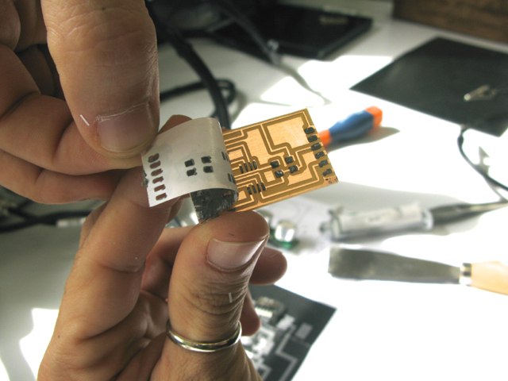

week 10: input devices
Hello sonar!
Our assignment this week was to "measure something" that is relevant for the final project. We were to add a sensor to a microcontroller board that we design and read it.
For my final project I am making a hydroponic herb garden. Here is the system I have in mind:
I will use both a water level and a PH sensor to automate my system, but this week I focused on the first. I wanted to program the sensor to do a reading once a day and turn on a green LED light when the water container is running low.
THE ULTRASONIC SENSOR
There are a few different ways to measure distance, but I thought using an ultrasonic sensor was a good option, as it doesn't need to be dipped in the water.
Ultrasonic sensors are designed to sense object proximity or range by measuring the pulse reflection time -- the time it takes to reflect ultrasound waves between the sensor and a solid object. They are popular because they are inaudible to the human ear and quite accurate within short distances.
How it works
"A basic ultrasonic sensor consists of one or more ultrasonic transmitters (basically speakers), a receiver, and a control circuit. The transmitters emit a high frequency sound, which bounces off any nearby solid objects. Some of that ultrasonic noise is reflected and detected by the receiver on the sensor. That return signal is then processed by the control circuit to calculate the time difference between the signal being transmitted and received. This time can then be used to calculate the distance between the sensor and the reflecting object."
As I could not find the recommended HCSR-04 ultrasonic sensor, I ended up using the Non Blind Zone Ultrasonic Module SRF04.
Ultrasonic sensor SRF04 -- datasheet
DESIGNING THE CIRCUIT
I used Neil's transmit-receive board as the starting point for my design, but I changed a few things:
- Turned the second Ground in J3 into a VCC
- Took out both 1M resistors
Here's my circuit's schematic and board on Eagle:
Here's Neil's model and my sonar board:
I was going to use a vinyl mask to apply solder paste to my circuit pads, so I needed to create a second file in Eagle. I picked layer 31 "tCReam" and got a view of my board with nothing but the pads:
I exported the traces and the pads as .png files -- 500dpi, monochrome.
Then I used GIMP to make the board's contour.
MILLING THE BOARD
I uploaded the images into fabmodules.org and when I saw the toolpath realized that a couple of my vias were too close together for the millbit to pass. I made them slightly thinner in Eagle: select the route you want to edit, right-click, go to "properties", edit "width" (I went from 0.016 to 0.012).
Once the board was edited, I uploaded it again into fabmodules and this time was able to mill the PCB quite quickly.

The circuit was looking pretty good:
MASK MAKING
I used the vinyl cutter to cut the mask on which I was going to apply the solder paste.
I applied the paste and pulled out the vinyl sticker, the pads looked nicely covered in paste, so I only needed to do a few retouches with the x-acto knife before it was ready to add the components.
SOLDERING COMPONENTS
I placed the components on the pasty pads:
I set up the hot gun at 340ºC and kept it on the circuit until the paste turned shinny.

A couple of minutes and all components were neatly attached to the board
Now it was time to test it with my ISP.
I connected my hello_sonar board to the ISP and both to the computer.
SMOKE!!
After hours of de-soldering, re-soldering all components and replacing the Attiny, the reason for the smoke finally became apparent -- the MODELA had not taken out a little bit of copper which was discretely connecting the MISO to the MOSI pads on the microcontroller. After removing that small bit of unwanted copper, I resoldered the Attiny and connected it again to the ISP.
NO SMOKE!!
I attached the sensor to the circuit board, and sent a test code to see if my microcontroller was ready to be programmed. And now it was.
I found an arduino project with code for the ultrasonic sensor:
PROGRAMMING
to be continued...
EAGLE FILES